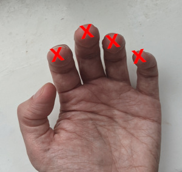
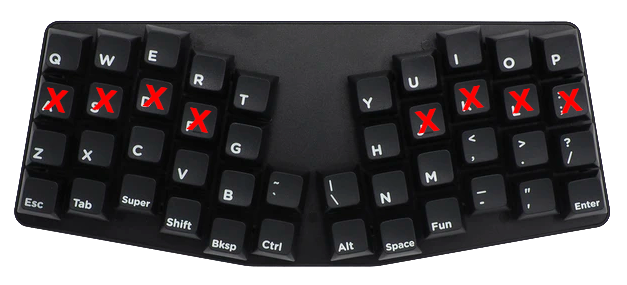

Keyboard effort grid: An improved model
In this article I develop a method of calculating a keyboard effort grid in a more objective and rigorous way than is usual, with the intention of using the generated results in keyboard layout analysis software. If you want to skip over the methodological details, you can jump direct to the results.
Background
Many keyboard analyses use at their heart a way to measure the effort involved a typing each key. This typically involves considering a number of factors, such as the distance a key is from the home position and the finger being used to type the said key. Although these factors seem reasonable, they are often both simplistic and overly subjective.
In keyboard analyses, it's not possible to eliminate personal judgement entirely, so some subjectivity will always be present. Nonetheless, the ease with which each key is typed can be considered in more detail by including relevent factors which are often ignored, and using these factors to construct a systematic model.
Note, any comprehensive keyboard analysis should include more components than just an effort grid: there are influences such as bigrams analysis, hand and finger balance, and rolls/alternation, which also play a part. These factors are outside the scope this article, as the focus here is on one element only: deriving a more accurate and rigorous keyboard effort grid based on real-world hand and keyboard geometry.
Notation
To indentify keys by name, they are referred to by their Qwerty labels unless explicitly mentioned.Finger lengths and Angle of Approach
The home key positions A S D F J K L ; are right underneath the fingers when using classic touch-tying technique. It might be imagined that natural home positions of the fingers therefore corresponds to the centre of these 8 keys. But we know the fingers are not all the same lengths. Indeed, a new generation of column-staggered keyboards has appeared which recognise hand geometry explicitly: the middle fingers are longer, the pinkies shorter, and the ring and index fingers somewhere in between. The geometry of a column-staggered keyboard can be used to inform where the relaxed home-key finger positions naturally lie - in this article I am basing these positions on geometry of the Atreus keyboard since that's what I have to hand, although other column-staggered keyboards have similar designs.
 
The hands don't approach the keyboard at right angles to the keyboard (assuming a traditional, non-split type). A comfortable posture should involve laying out the keyboard directly in front of the user, with wrists straight and forearms approaching the keyboard symmetrically and at an angle. Using the Atreus keyboard as an example, it's notable that this assumption is built-in, by virtue of the columns being layed out at a 10° angle relative to vertical. In split and widely separated keyboards, this angle would be unnecessary, but is certainly needed for single-piece keyboards.
Putting these two observations together, we can overlay the staggered key positions of the Atreus, to guide us toward more natural home positions on a standard, staggered keyboard.
| Home Key | X-displacement | Y-displacement |
|---|---|---|
| index | −0.04u | −0.34u |
| middle | +0.03u | +0.14u |
| ring | +0.00u | +0.05u |
| pinky | +0.01u | +0.07u |
What's notable is that (i) the ring and pinky finger home positions coincide closely, (ii) the middle finger home position is naturally a bit higher than the centre of the D and K keys, and (iii) the index finger home position is significantly below the centre of the F and J positions, reaching about ⅓ of a key unit towards the bottom row.
My personal observation is that this pattern corresponds closely with what I've noticed in practise. When using a traditional keyboard, it's slightly easier for the index finger to reach the upper row, and also significantly easier for the index finger to reach down the C and M keys.
Finger strength
Not all fingers are created equal, and there is broad agreement that the index and middle fingers are strongest, the pinkies the weakest. Quantifying the relative strengths of each finger is a subjective matter, but in this model, the effort to type a given key is multiplied by a factor based on the finger used:
| Finger | Effort Multiplier (Pf) |
|---|---|
| index | 1.0 |
| middle | 1.1 |
| ring | 1.3 |
| pinky | 1.6 |
Key size
Despite the fact that the index fingers may rest over the lower part of the F and J keys, it's nonetheless easy for those fingers to type their respective home keys. Fingers do not necessarily need to travel to the central point of a key to successfully strike it. This observation becomes especially significant for larger keys: Considering the left-shift key for example, the point at which it is usually pressed is significantly to the right of its midpoint. Instead of basing distance calculations on a key's central point, we should instead consider that there is a region surrounding the central point of key where it can easily be typed. It may be easier hit keys such as E and R slightly to the right of centre to mitigate the wrong-way stagger on the left-half of traditional keyboards.
In this model, an "activation area" in the central part of each key is defined. This central part is defined as a box with margin ⅓u within the key's footprint. To strike a key, the distance travelled is considered to be that which is needed to reach a point within this area, rather than to the exact centre of the key.
Lateral Motion
In common with my fork of the patorjk analyzer, this model also assumes lateral motion of the hand is more costly than simply curling a finger inward or outward. Consequently, motions that are transverse to the direction of the forearm are penalized more heavily than directions that are aligned (the mesial direction). Using the geometry of the Atreus keyboard as a guide, the angle-of-approach of the arms is set to 10° from the vertical in this model.
Creating a new model
Putting these observations together makes it possible to create a new model of keyboard effort grid for any arbitrary keyboard geometry, by calculating the effort values from base principles. In summary, the model works like this:
- the effort to type a key is deemed to be a combination of the mesial (x1) and lateral (x2) components of the distance from the home position.
- the distances are calculated based on the finger reaching the nearest point in the "activation area" rather than than the central point on a key.
- the home positions for each finger used in the calculation are informed by natural variation in finger length and the design of column-staggered keyboards.
- the finger used to type each key is not imposed on the model, but rather is determined automatically as the one which minimizes the effort function.
The total effort value for each key, Ptotal, is calculated with the formula:
Ptotal = (1.0 + Pd (Dmesial + 2 Dlateral)) * Pf
...where Pd is a distance-based penalty constant, Pf is the finger-based penalty, and Dmesial, Dlateral are the two components of the distance vector of the key's activation area from the home position.
Results
Using this new model, the effort scores for each key on the keyboard can be calculated. The finger whose effort score is lowest is also caculated to determine an objective indication of which finger should be used for each key.
The results are broadly in line with expectations, favouring home keys and strong fingers directly above and below the home positions. There are also similarities with the current Colemak-DH effort grid shown at the top of the page. But there are some noteworthy observations:
- The top-row left hand positions (W, E, R) are penalised more strongly than the equivalents on the right, due to the wrong-way stagger of traditional keyboards on the left-hand side. However a consequence is that the T position is found to be significantly better than Y.
- The best non-home keys on the keyboard are still C and M, but the other bottom-row index-finger keys V and N perform better than expected too.
- The calculated finger assigments suggest middle fingers should be used for keys 4,8,9, index fingers for 5,6,7.
- Keys on the far-right of the keyboard are costly and should be avoided (e.g. by using mods like Extend, Wide, or both!)